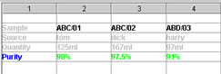
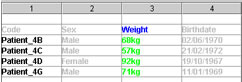

| Overview |
Use the Measurement Manager plugin to view and manipulate Measurements. Using the controls in this panel, Measurements can be renamed, deleted and hidden, Colourisers can be selected and Measurement Attributes can be examined, altered and searched.
User Interface
Measurement Properties
Measurement Attributes
Editing
Searching
Exporting
Importing
Measurement Statistics
| User Interface |
On the left of the panel is a list containing all of the Measurements in the current data. One or more Measurements can be selected at a time; use the "Select All" button to conveniently select all of the Measurements in the list.
To the right of this list are three tabbed panels, each showing a different aspect of the currently selected Measurements:
The bar which divides the list of Measurement names from the tabbed panels can be dragged to the left or right to provide more space for the names or tabbed panels as required.
Along the bottom of the panel are some controls which are always available regardless of which tabbed panel is currently displayed:
| Measurement Properties |
These controls are (from top to bottom):
To change the attributes of more than one Measurement at a time, e.g. to hide several Measurements, make a multiple selection in the list (using 'Shift'-click or 'Ctrl'-click).
The "Name" cannot be changed during multiple selections, but all other attributes can be changed. This makes it easy, for example, to assign a different "Colouriser" to all Measurements at once.
| Measurement Attributes |
Measurement Attributes are
A list of the names of all Measurement Attributes (sorted into alphabetical order) is displayed on the left hand side of the panel. As with the Measurement list, one or more names can be selected at a time. Below this list is a set of control buttons:
To the right of this list is a table in which the names and values of the currently selected Measurement Attributes are displayed. When there is sufficient space, the time of creation and time of last modification are also displayed.
| Editing |
The attribute values can be edited by clicking on the cell in which they are being displayed. Only the 'value' and 'source' fields can be edited, the 'created' and 'last modified' fields are controlled automatically.
| Searching |
Under the table which displays the attribute fields is a type-in field which is used for searching. Type a string into this field and any attributes which contain this string will be highlighted in the table. All attribute fields are checked in the search.
The "Case sensitive" and "Match substrings" options control how the searching is performed. "Match substrings" toggles between allowing only complete matches or allowing partial matches (i.e. the string 'arg' partially matches 'target').
The "Select" button selects all Measurements and Measurement Attributes which match the current search, i.e. those which are currently highlighted.
| Exporting |
The currently selected Measurement Attributes (i.e. the contents of the table) can be exported to a plain text file.
The export dialog box shows a preview how the file will be structured. The following controls are provided:
Note that the 'source', 'created' and 'last modified' fields are only available when one of the "One per line..." formats is selected.
Pressing the "Export" button displays a file chooser dialog in which the file name and location for the exported data can be selected. The data will be written once the file has been chosen. The "Cancel" button aborts the data exporting process.
| Importing |
|  |  |
The process of importing Measurement Attributes begins by choosing a file. The contents of the chosen file are then displayed in a table view. The delimiter that separates columns can be either "TAB", "Space" or "Comma".
The data to be imported is defined by tagging cells in the tabular view of the data. Regions of the table are selected by pressing and dragging the mouse or by 'shift' clicking in the usual fashion. Once a region is selected one of the three 'tag' buttons should be pressed to indicate what type of data the cells contain. The three possible types are "Measurement Names", "Attribute Names" and "Attribute Values".
The tagging process is best illustrated by example: consider the following tabular data
| name | Subject 5 | Subject 6 | Subject 7 |
| sex | male | male | female |
| weight | 67.8 | 74.3 | 99.1 |
The "Measurement Names" are in the top row and the "Attribute Names" are in the left-most column. By selecting the revelant cells in the table and using the 'tag' buttons, the table can be coloured as follows:
| name | Subject 5 | Subject 6 | Subject 7 |
| sex | male | male | female |
| weight | 67.8 | 74.3 | 99.1 |
Finally, the "Measurement Values" cells are identified in the same way, i.e. they are selected in the table and the "Tag as Measurement Values" buton is presed:
| name | Subject 5 | Subject 6 | Subject 7 |
| sex | male | male | female |
| weight | 67.8 | 74.3 | 99.1 |
Once a valid configuration of cells have been tagged, the "Export" button will become enabled.
If the contents of cells that are tagged "Measurement Names" cannot be matched with the names of the current Measurement then an error message is displayed and the data is not imported. In the above example, there would have to be existing Measurements with the names "Subject 5", "Subject 6" and "Subject 7".
If the attribute names that are being imported match names of attributes that already exist then a warning message will be displayed with the option to replace the existing values or automatically rename the attributes as they are loaded.
This method of tagging the data to be imported means that many different layouts can be handled. The most general case is that a single attribute name:value pair can be imported from anywhere in the data, in the following example...
| name | Subject 5 | Subject 6 | Subject 7 |
| sex | male | male | female |
| weight | 67.8 | 74.3 | 99.1 |
...Measurement "Subject 7" would be given an attribute called 'male with the value '74.3'.
| Measurement Statistics |
The 'statistics' tabbed panel displays a number of useful statistics for the curently selected Measurement(s):
| #Spots | the number of Spots in the Measurement |
| Min.Value | the minimum value in the Measurement |
| Max.Value | the maximum value |
| Mean Value | the mean (i.e. max-min * 0.5) value |
| % +ve | the percentage of Spots with values > zero |
| % -ve | the percentage of Spots with values < zero |
| #NaNs | the total number of Spots which are 'Not-A-Number', i.e have an undefined value |
| #Infs | the total number of Spots with the value of 'Infinity' |
The following options are available to control how the statistical data is displayed: